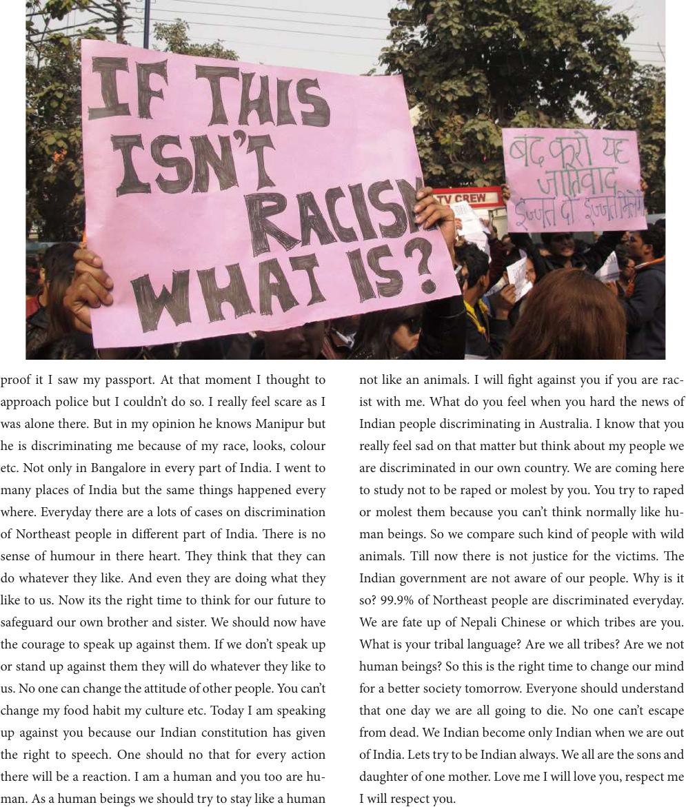

proof it I saw my passport. At that moment I thought to
approach police but I couldn’t do so. I really feel scare as I
was alone there. But in my opinion he knows Manipur but
he is discriminating me because of my race, looks, colour
etc. Not only in Bangalore in every part of India. I went to
many places of India but the same things happened every
where. Everyday there are a lots of cases on discrimination
of Northeast people in dierent part of India. ere is no
sense of humour in there heart. ey think that they can
do whatever they like. And even they are doing what they
like to us. Now its the right time to think for our future to
safeguard our own brother and sister. We should now have
the courage to speak up against them. If we don’t speak up
or stand up against them they will do whatever they like to
us. No one can change the attitude of other people. You can’t
change my food habit my culture etc. Today I am speaking
up against you because our Indian constitution has given
the right to speech. One should no that for every action
there will be a reaction. I am a human and you too are hu-
man. As a human beings we should try to stay like a human
not like an animals. I will ght against you if you are rac-
ist with me. What do you feel when you hard the news of
Indian people discriminating in Australia. I know that you
really feel sad on that matter but think about my people we
are discriminated in our own country. We are coming here
to study not to be raped or molest by you. You try to raped
or molest them because you can’t think normally like hu-
man beings. So we compare such kind of people with wild
animals. Till now there is not justice for the victims. e
Indian government are not aware of our people. Why is it
so? 99.9% of Northeast people are discriminated everyday.
We are fate up of Nepali Chinese or which tribes are you.
What is your tribal language? Are we all tribes? Are we not
human beings? So this is the right time to change our mind
for a better society tomorrow. Everyone should understand
that one day we are all going to die. No one can’t escape
from dead. We Indian become only Indian when we are out
of India. Lets try to be Indian always. We all are the sons and
daughter of one mother. Love me I will love you, respect me
I will respect you.